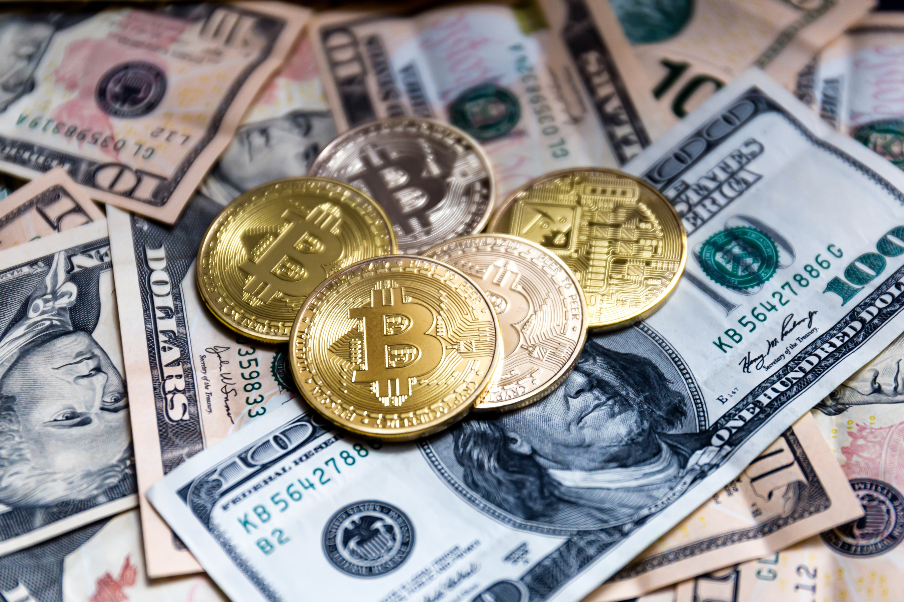
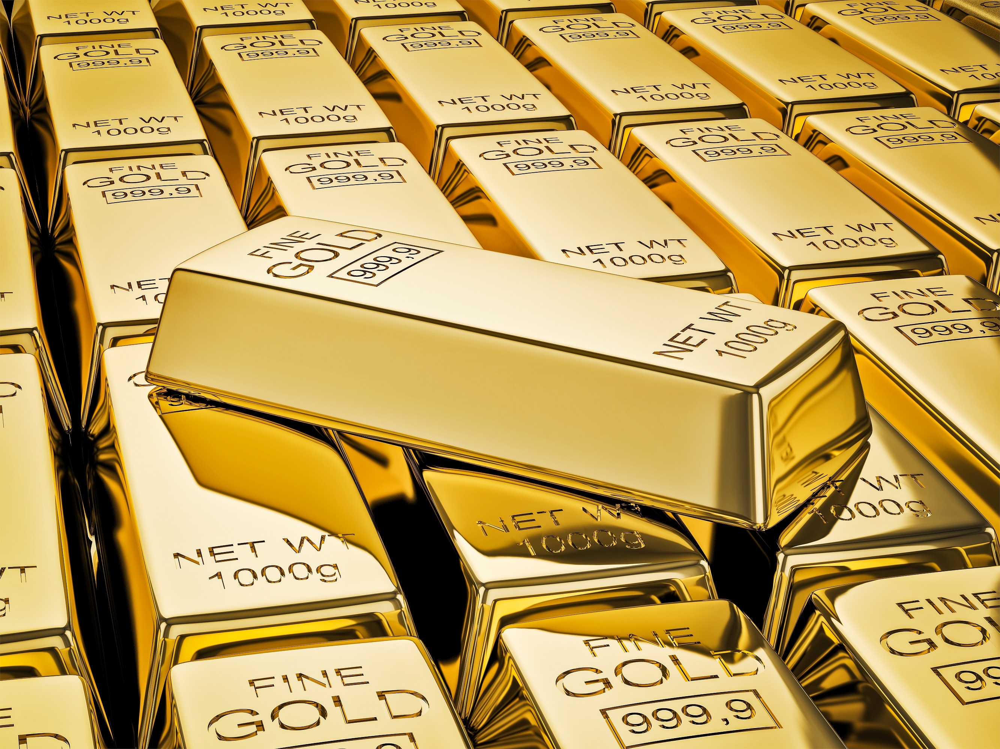

Understanding Crypto - Stablecoins
The strangest thing in the crypto market is the unpredictable volatility. When experts argue if the price of bitcoin is going to be 60,000 or just 60, they are basically arguing a very fundamental thing - just how much is one Bitcoin worth? It was a new asset that had nothing like it in the market, so no one knew what it was worth. Like finding a new metal and selling it, before its practicality is even known. Is it something that will change the world or is it just a gimmick? Many experts are still fighting over this.
A fixed exchange rate

A lot has changed since Bitcoin showed up first in the market. A lot of folks have realized the usefulness of a virtual asset, but they do acknowledge that the volatility is not good for business. Sure, it works if you consider the coin to be an investment that you can daytrade, buying it for 100 in the morning and selling for 200 in the evening. On the other hand, if a friend asks you to send him 100 dollars, but right after sending the value drops to 50 dollars, it is not an ideal payment tool.
That is when Stablecoins show up. A Stablecoin is a cryptocurrency that has its value tied to another item in the world. This method has been used in the world for a long time. Countries with a smaller economy often “tie together” the value of their money to the value of a larger economy. For example, one HKD (Honk Kong Dollar) will always cost 13 USD cents. In more than 10 years it has never changed and the exchange rate is always the same.
Crypto environment
You like it or not, but almost all coins are, by nature, pegged to Bitcoin’s value. Many people use the price of Bitcoin as a measurement for the general health and well-being of the whole crypto industry. When it falls for whatever reason, various “experts” are keen to pipe up that the whole virtual asset concept is a failed one. While that could not be further from the truth, various investors always panic and sell, creating a Bear market. When Bitcoin falls, all the crypto market struggles.
That makes it a faulty payment tool, a faulty instrument for investing in a longer term. If you sign an agreement that you will invest a single Bitcoin after a year, you have no idea what it is going to be worth then. It is more a bet or a gamble, not an investment. Because of that, the concept of a Stablecoin is born. A coin that has its value tied to a different asset. It means that, no matter what happens, you will be able to sell that coin for a pre-set value. The most famous of them, USDT, is tied to the value of USD. It always costs 1 USD, no matter what. Sure, there might be some small fluctuations here and there, but that is the rule.
The easiest way to achieve this is to have collateral. If a project sells a million Stablecoins, each costing 1 dollar, they take million dollars and put them in a safe. That ensures that each coin is always backed by a dollar. No matter how many are sold, there will always be enough for everyone. Even if you are the last one to sell, the price has not dipped.
That is, of course, the easiest way. There are also coins that are pegged with other FIAT currencies, other cryptocurrencies and, of course, precious metals. Some projects do not even have an asset behind them, but they keep their value artificially. Whenever the price falls, it burns a lot of coins to artificially boost the value. When the price climbs, it creates more coins and dilutes the market. To be frank, this is not a widespread approach, as it defeats the purpose of the actual dollar behind it. Still, the fundamentals are clear - each coin holds its worth as it is backed by a real life asset.
Any drawbacks?
If there was a single system good for everything, there would not be many systems. So it only makes sense that there are a few drawbacks. Yes, the coin that has its value tied to a dollar will be relatively stable, just like the dollar, but what about those that are tied to other cryptocurrencies? If your currency is just as volatile as those networks, then you have not created anything new, but just mirrored an already existing problem.
Also, to claim that the coin is actually safe and has a backing of an asset, the project needs to prove that they have that asset. That means a third party needs to be involved that will audit the finances of the project and claim that yes, they do indeed have a million in a bank. It is basically a question of trust. How much you believe in said project and how much you believe in the third party. Any second a rumour starts circulating that the project doesn’t have a real life million stashed away, people will sell.
Such panics happen all the time with real life banks too. We’ve all seen the lines of people standing by their bank, trying to cash out their savings, because a rumour is going around that the bank is going bust. And many times that actually happens, meaning that people are rightly afraid. Now, even if a bank has the funds - if everyone closes their accounts, it can not function anymore. Even if it did nothing wrong. So trust is a big issue and, as we all know, the crypto crowd is not a big fan of blindly trusting someone.
And that someone is not only the project and its leaders. If a huge amount of money is stashed in a bank, that means that the whole project depends on that exact bank, that exact account and that exact country where the bank is located. Any government can freeze any account if they think there is a reason for it. Considering the general paranoia about crypto and loose legislation, there is a high chance it can happen. They freeze the assets and the whole project is done for. Even if they unfreeze them at a later date, the damage has been done.
Notable Stablecoins
Tether (USDT), True USD (TUSD), USD Coin (USDC), Paxos Standard Token (PAX) and many others are tied to the US dollar. If you are to check their price right now, it will be right around the 1 dollar mark. While they all seem like the same thing, there are many differences among them. Some coins are not entirely trusted because people do not know if they have the funds to back them up. Some coins are not entirely trusted, because they have actually proven that they have the funds and are up to all the required legislation, but thus have come under the regulatory boot of federal laws. Again, as usual in the crypto field - your chosen level of freedom always comes with a similar level of risk.

Goldcoin - a step that is almost exactly like tokenization. You can invest in real actual gold without having to buy it and store it. If you want to invest in precious metals, you do not need to worry about your house being broken into or a natural disaster that will take your gold away. It is all stored in the bank by the project managers and you have bought proof of your ownership in gold. No matter how small of a piece of a percent of a nugget you want.
Libra, the Facebook coin. Another big company that decided to examine the crypto market. The problem with this is that Facebook doesn’t have that good of a reputation regarding privacy. So it is considered as the “McDonald’s” of coins. A cheap, basic version of a cryptocurrency that real fans see as worthless. Still, it is a great move in general, as Facebook is surely a company that can push governments into fixing the too complicated and confusing regulation in the crypto world.
Conclusion
Stablecoins are not here to move mountains and shake the ground up. No one is going to become rich by investing a hundred today and taking out exactly a hundred after a year. That is the reason why they have flown under the radar. A boring, uninspired financial instrument that mimics what FIAT has done for a long time.
Alas, that is not the point. They are the workhorse of the whole ideological movement. The bridge between serious investors and dreamers. Bankers and innovators. Bitcoins and other volatile coins are there to grab the attention of the media and get others interested. And when they have turned their heads, Stablecoins are their first step in the world of serious crypto finances.
Thank you for reading our blog. If you have any questions about the topic or want to suggest a new one, please write an email to [email protected].